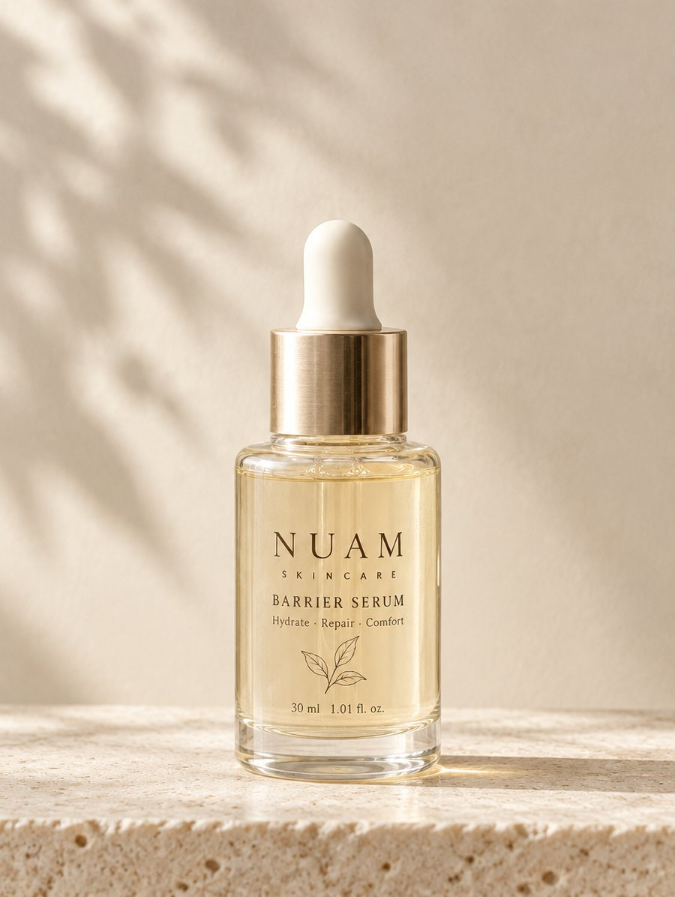
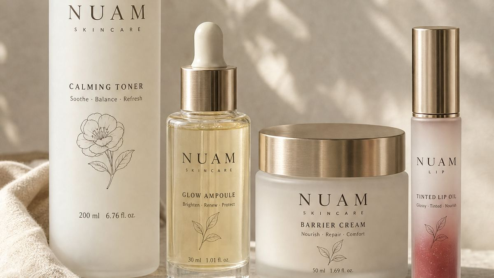
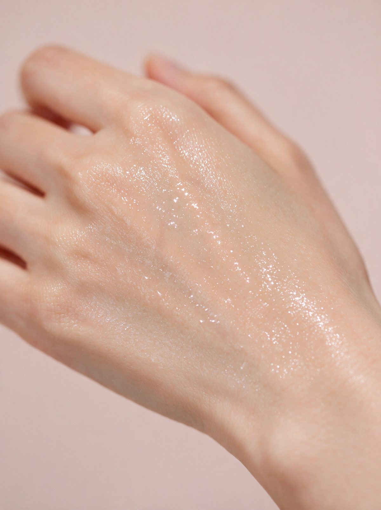

200
ml
Step 01
Toner
Toner
저자극 토너
세안 뒤 첫 단계. 알코올을 넣지 않아 닦아내는 대신 적시는 방식으로 씁니다.
- 손바닥에 덜어 얼굴 전체에 두 번 겹쳐 바르기
- 향료·에센셜 오일·색소·알코올 무첨가
읽는 순서대로 한 문장이 이어집니다. 1장 문제 · 2장 결정 · 3장 세 가지.
계절이 바뀌면 매번 다시 붉어지는 피부가 있습니다.
누암은 단계를 늘리는 대신 줄이는 쪽을 골랐습니다. 그래서 이 페이지는 무엇을 넣었는지보다, 무엇을 넣지 않았는지를 먼저 적었습니다.

Chapter One · 문제
봄에는 바람, 여름에는 땀, 가을에는 건조한 공기, 겨울에는 실내 난방. 원인은 매번 다른데 결과는 늘 비슷했습니다. 뺨이 먼저 달아오르고, 화장품 개수가 하나씩 늘어나고, 몇 주 뒤에는 다시 처음으로 돌아갑니다.
쓰는 것이 늘어날수록 원인을 좁히기는 어려워집니다. 일곱 개를 바르고 나서 뺨이 붉어졌다면, 그중 무엇 때문인지 알아낼 방법이 마땅치 않습니다.
누암은 여기에서 시작했습니다. 더 좋은 것을 하나 더 얹기 전에, 지금 얹혀 있는 것부터 세어 보기로 했습니다.
쓸 것을 늘리는 동안, 피부가 쉬는 날은 줄어듭니다. 누암 제품 기획 노트
그래서 무엇부터 정했을까요.
2장 · 빼기 목록 보기Chapter Two · 결정
처방을 시작하면서 좋은 성분을 고르는 일부터 하지 않았습니다. 대신 넣지 않을 네 가지를 먼저 확정하고, 그 조건 안에서 만들 수 있는 것만 만들었습니다. 네 줄을 지우는 동안 처방은 여러 번 다시 쓰였고, 향을 넣지 않기로 한 뒤에는 원료 자체의 냄새를 감출 방법이 없어 원료를 바꿨습니다.
덜어내는 쪽을 고른 이유는 단순합니다. 개수가 적으면, 맞지 않는 것이 있을 때 찾아내기가 쉽습니다.
네 줄을 지우고 남은 것은 성분표에 전부 적혀 있습니다.
이 조건으로 만든 것은 세 가지입니다.
3장 · 세 가지 보기Chapter Three · 세 가지
토너로 적시고, 세럼을 한 겹 올리고, 크림으로 덮습니다. 여기서 더 늘리지 않는 것이 누암이 제안하는 순서입니다. 세 제품은 같은 네 줄의 조건 아래에서 만들어졌습니다.
개수를 줄이면, 맞지 않는 것을 찾는 시간도 줄어듭니다. 사용 순서에 관한 메모

세안 뒤 첫 단계. 알코올을 넣지 않아 닦아내는 대신 적시는 방식으로 씁니다.

피부가 자주 당기는 날 얇게 한 겹. 마르는 동안 겹쳐 바르지 않는 편이 좋습니다.
마지막 단계에서 수분이 날아가는 속도를 늦춰 줍니다. 건조한 곳에만 한 번 더 덧바릅니다.
세 제품 모두 전 성분을 공개하고, 자체 사용성 테스트를 거친 뒤 출시합니다.
제품 페이지로 넘어가기